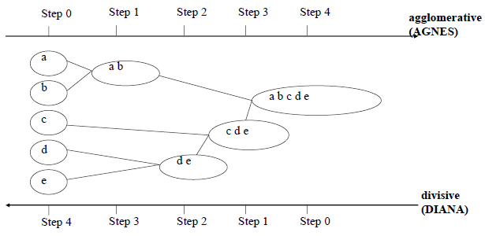
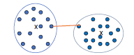
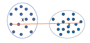
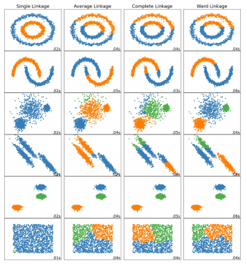
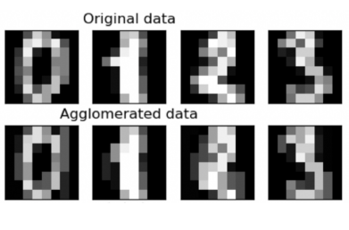

Code
wcss = [] # within-cluster sum of squares
for i in range(1, 11):
model = KMeans(n_clusters = i)
y_kmeans = model.fit_predict(x)
wcss.append(model.intertia_) # adding accuracy to our model
Single Link (nearest neighbor)

Complete Link (diameter)


